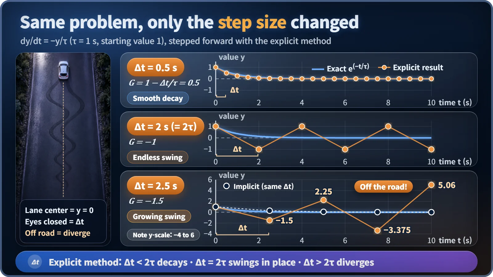
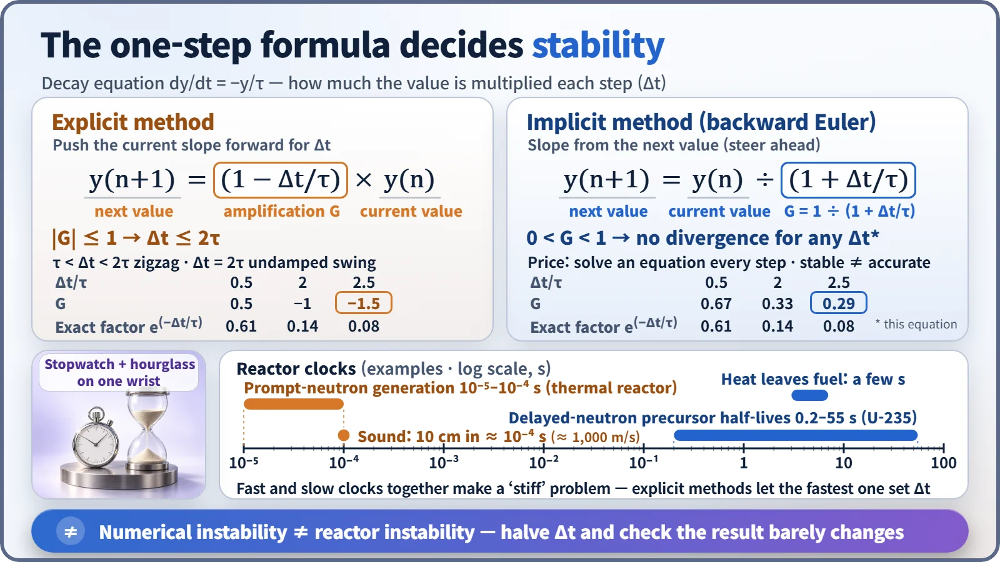

Modeling, Simulation & Computation · 258
The Driver Who Only Opens His Eyes Every Few Seconds — Why the Time Step Shakes Numerical Stability
Step too far between looks and the calculation over-steers. For a simple decay the limit is Δt = 2τ, and a wobbling calculation is not a wobbling reactor.
A computer advances time in discrete steps of size Δt, and if the step is too large compared with the fastest process being calculated, an explicit calculation zigzags and then blows up. For a simple decay with time constant τ, the limit is Δt = 2τ. Implicit methods remove that limit but not the need for accuracy, and a wobbling calculation says nothing about whether the reactor itself is unstable. [1]
A calculator game that breaks simulations
Enter 1 on your phone's calculator and multiply by −1.5, then multiply the result by −1.5 again, and again. 1, −1.5, 2.25, −3.375, 5.06… The sign flips while the number grows.
This is exactly what a broken simulation looks like: a value that should quietly shrink to zero dances and runs away because of the way it was calculated. The culprit is the time step, written Δt.
Driving with your eyes shut
A computer cannot follow time smoothly. It chops time into regular intervals and keeps repeating one move: use the current state to calculate the next. The size of that step is the time step.
Picture a driver who opens his eyes only every few seconds. If the car has drifted right, he turns the wheel left by a matching amount, closes his eyes and holds that angle until he looks again. With a short interval he glides back to the lane center. With a long one he passes the center while still steering left, finds himself in the other lane, cranks the wheel right, and the zigzag begins. Longer still, each swing grows until he leaves the road. It wasn't his skill that caused the crash; it was how often he opened his eyes.
The 2τ line
Take the simplest decay, a change that shrinks in proportion to the current value, like a cup of tea cooling: rate of change = −(current value) ÷ τ. The time constant τ is the process's clock; with τ = 1 second the value shrinks to about 37%, roughly a third, every second.
The easiest calculation is the explicit method: take the slope now and push along it for Δt, the eyes-closed driver's approach. Each step multiplies the value by (1 − Δt/τ). [1]

| Step Δt (τ = 1 s) | Multiplier per step | Values | Behavior |
|---|---|---|---|
| 0.5 s | 0.5 | 1, 0.5, 0.25, 0.125… | Decays without oscillating |
| 2 s (= 2τ) | −1 | 1, −1, 1, −1… | Swings forever |
| 2.5 s | −1.5 | 1, −1.5, 2.25, −3.375, 5.06 | Diverges |
The rule: for this method to hold together, Δt must not exceed 2τ. Between τ and 2τ nothing blows up, but a zigzag that doesn't exist in reality creeps in.
The driver who steers by looking ahead
The fix is to set the wheel by "where I'll be the next time I open my eyes." That is the implicit method. The future value appears on both sides of the equation and is solved for, so each step multiplies the value by 1 ÷ (1 + Δt/τ). For this decay problem that number stays between 0 and 1 however large Δt is: no oscillation, no divergence.

It isn't free. An equation must be solved at every step, so each step costs more, and above all stable doesn't mean accurate: a step that is too large smears out fast changes.
A reactor wears a fast clock and a slow clock
Reactor calculations hold processes with wildly different time scales:
| Process | Typical time scale |
|---|---|
| One neutron generation, fission to fission (thermal reactor) | Tens to hundreds of microseconds |
| Sound crossing a 10 cm cell in high-pressure primary water (around 1,000 m/s) | About a ten-thousandth of a second |
| Heat escaping from a fuel rod to the coolant | A few seconds |
| Decay of delayed-neutron precursors | About 0.2 to 55 seconds |
The fast and slow ends differ by tens of thousands of times or more, which makes the problem stiff. An explicit method must shrink Δt to suit the fastest process, to a thousandth of a second or in some cases a ten-thousandth, so a transient of a few minutes balloons to hundreds of thousands to millions of steps, even when only the slow thermal changes matter. Reactor kinetics and thermal-hydraulic codes therefore treat the fast terms implicitly. A similar limit applies in space: with an explicit method, information must not jump more than one cell per step. [2] [3]
A shaky calculation doesn't mean a shaky reactor
A zigzagging graph does not mean the reactor is unstable. Temperature feedback and thermal-hydraulic instability are properties of the real reactor; numerical instability is a fake created by the calculation method.
The real danger is mixing them up: believing a fake oscillation, or letting an oversized Δt erase a real one and concluding "looks quiet." So analysts halve Δt, run again and check that the result barely changes. If it holds, the step size can be trusted.
Key takeaways
The time step is a calculation's stride. Too long a stride compared with the process's time constant makes an explicit calculation zigzag and run away; for a decay, 2τ is the line. Implicit methods remove the line but not the need for accuracy. When a plausible-looking simulation appears on screen, one of the first questions an expert asks is: "How often did that driver open his eyes?"